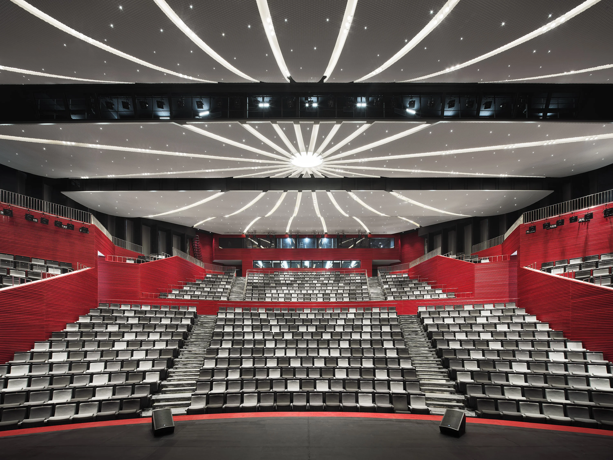
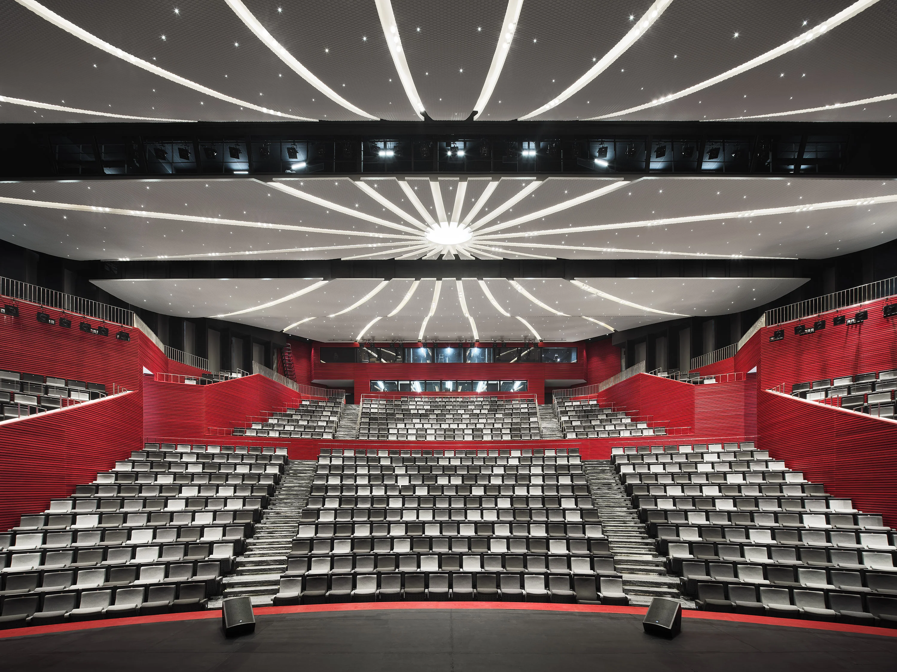
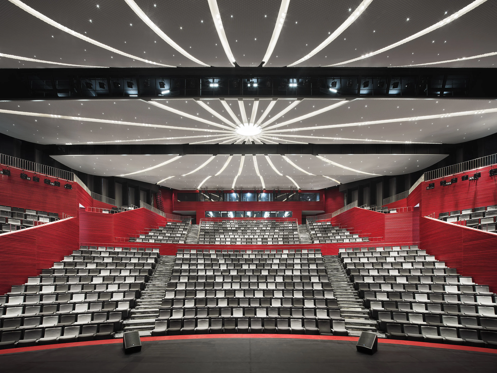
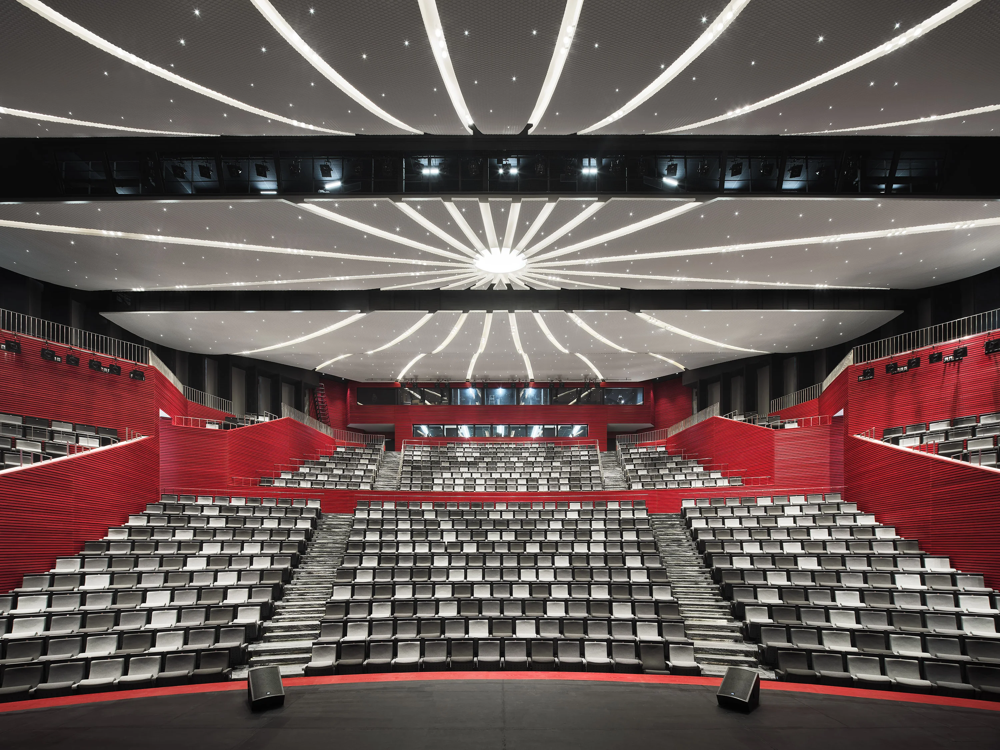

Qingyan Zhu Photographer
 



We are a Shanghai-based architectural photography studio specializing in professional architectural and spatial imagery. The studio focuses on delivering clear, vibrant, and highly legible imagery that accurately conveys spatial logic and design intent, supporting architectural firms in publications, competitions, and project presentations.
The studio is founded by architectural photographer Qingyan Zhu in 2019, who graduated from School of the Art Institute of Chicago (SAIC). From 2017 to 2019, he trained with the renowned Chicago-based architectural photography studio Hedrich Blessing Photographers (now Hall+Merrick Photographers), known for its long-term documentation of modernist architecture, including works by Frank Lloyd Wright, Mies van der Rohe, Eero Saarinen, and Skidmore, Owings & Merrill (SOM). During this period, he participated in the photography and post-production of several significant projects.
The studio partner, Zixi Chen, graduated from Politecnico di Milano with a strong architectural and interior design background, contributes to the studio’s work through architectural understanding and spatial analysis.
The studio’s work has been published in leading architectural media such as ArchDaily, Dezeen, A+U, Gooood, Archiposition, Architectural Practice, etc., and was featured in Issue 32 of Chinese Architectural Photographers by Archiposition.
Architizer A+Awards Popular Choice Winner CCBD
APR IID Awards: Bosch Global Flagship Showroom SH by HATCH
Dezeen Awards: Rebirth Project: Renovation of SH Relay Factory by HCCH
Dezeen Awards: Mixed-use project shortlisted: Xi’an CCBD by Heatherwick Studio
AMP (Architecture MasterPrize) Winner 上海成交成功办公室 (Transaction Succeed Office) 壹舍设计
AMP (Architecture MasterPrize) Winner 杭州望朝中心 (Wangchao Center) SOM
Dezeen Awards China Shortlist HCCH 合尘建筑
Frame Magazine (2024) - Retail Design: Zeekr Center Chengdu
Architizer A+ Awards Special Mention: International Digital Sea by HATCH
BLT Design Awards: Winner Award in the Architectural Design: MAX Technology Park SH by
HATCH
Dezeen Awards: Top 10 Chinese architecture projects of 2024: Twisted Brick Shell Concept
Library by HCCH
Chinese Real Estate Design Awards Gold Award: Hangzhou Wangchao Center by SOM
International Design Award - Bronze in Architecture Project Development / Industrial /
Infrastructure: Yongchun Red Vinegar Factory by LEL Design Studio
AMP (Architecture MasterPrize) Winner 彭宅 (Peng's House) L&M Design Lab
AD China (2023 Special Issue) - AD100 (Moët Hennessy Diageo Shanghai Office) by
BNJN
Yuan Zu Dream World – Tadao ANDO Complete Works
ARCHINA: Top 10: ZEEKR Center Yangcheng Lake by HATCH
ArchDaily Best Architectural Models Yongchun Qiaoxin Red Vinegar Factory by LEL Design
Studio
APAlmanac Project of the Year Shortlisted
AIA Chicago Design Excellence Awards ARCH XL: Citations of Merit, Shanghai International
Financial Center by FGP Atelier + Jahn
CTBUH finalist Best Tall Building 200–299M, Shanghai International Financial Center by FGP
Atelier + Jahn
有方《摄影师专辑》(2021) – “原地过年”全球建筑摄影师分享：上海篇
有方《中国建筑摄影师》第32期 – 朱清言个人专访
有方《乌兹别克斯坦摄影日记》 – 朱清言个人旅行纪实专题
Cell: +86 1340204087
E-mail: qingyan@qzhuphoto.com
Red: 清言筑造
Instagram: qzhuphoto
by Heatherwick Studio. Photographed in 2024
| Year | Project | Location |
|---|---|---|
| 2025 | Xi'an CCBD | Xi'an |
| 2024 | Shanghai Tower | Shanghai |
| 2024 | Beijing Daxing Airport | Beijing |
| 2023 | Guangzhou Opera House | Guangzhou |
| 2023 | Shenzhen Bay | Shenzhen |
| 2023 | Chengdu IFS | Chengdu |
| 2022 | Hangzhou Olympic Center | Hangzhou |
| 2022 | Nanjing Zifeng Tower | Nanjing |
| 2022 | Wuhan Greenland Center | Wuhan |
| 2022 | Chongqing Raffles City | Chongqing |
| 2022 | Suzhou Museum | Suzhou |
| 2023 | Onoma Hotel | Hong Kong |
| 2023 | Taipei Modern Residence | Taipei |
| 2023 | Macau Waterfront | Macau |
| 2023 | Sanya Coastal Resort | Sanya |